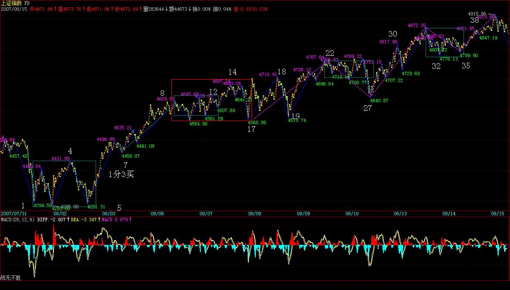
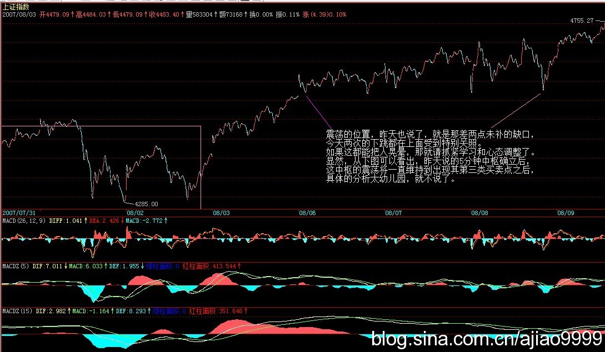
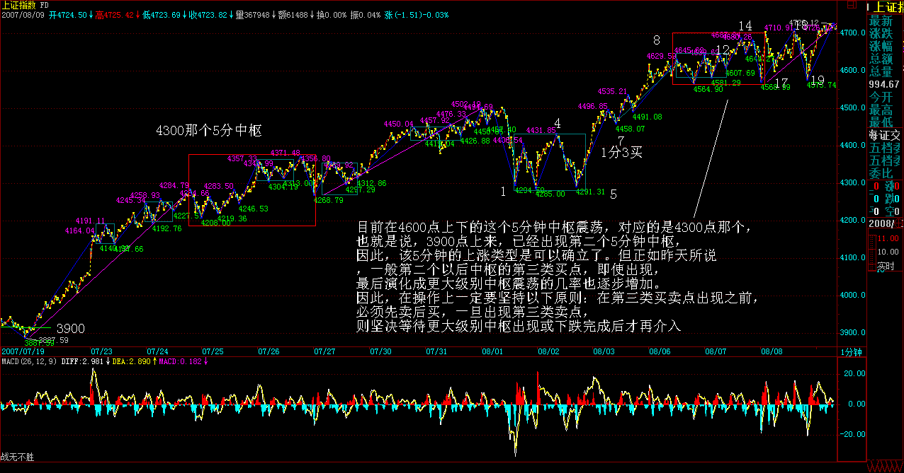

|
 |
教你炒股票68：走势预测的精确意义
(2007-08-05 10:36:28)
今天说说预测，何谓预测？一般的预测是什么把戏？而科学严密的预测究竟是怎样的，本ID的理论是如何成为最精确最当下预测的，这都要在这里说明。真正的预测，就是不测而测。当然，这和一般通常的预测不是一个概念。在通常预测概念的忽悠、毒害下，很多人那根爱预测之筋总爱不时不自主地晃动几下，这里也算给那些被预测毒害的人治疗治疗，也算死马当活马治一治了。
市场的所有走势，都是当下合力构成。例如，前几天，认沽权证突然停牌导致的走势，就是由于规则分力有了突发性改变当下构成的。由于一般情况下，政策或规则的分力，至少在一个时间段内保持常量，所以，一般人就忘记、忽视其存在。但无论是常量还是随着每笔成交变化的变量，合力都是当下构成的，常量的分力，用F(t)表示，只是表示其值是一个常量或者是一个分段式常量。对于任何一个具体的t来说，这和变化的分量在合成规则与合成的结果来说，没有任何的区别。
但这些常量的分力，并不是永恒的常量，往往是分段式的，其变化是有断裂点的，很多基本面上的分力，都有这个特点，这些断裂点，构成预测上的盲点。当然，进行基本面分析，对宏观面进行大面积的考察，可以尽量减少这些盲点，但不可能完全消除。这因素的存在，已使得所有一般意义上的精确预测可能变成一个笑话。
更重要的是，基本面上的因素，也是合力的结果。政治、经济等等方面，哪个不是合力的结果？现在的世界政治、经济格局，就是众多合力的结果，一个国家里的就更是这样了。很多人一根筋思维，总是假设政策是一个上帝，是不需要合力的，里面没有各种利益的斗争，所有结果都如同一个预设的机器给出的。所有一般意义上精确预测的理论，实质上都是以类似的一根筋思维为前提的。
比前面这些更深刻的，站在哲学的角度，预测也是一个分力，就如同观察者本来就被假定在观察之中，所有观察的结果都和观察者相关、被观察者所干预，以观察者为前提，预测也是同样的方式介入到被预测的结果之中。正如同量子力学的测不准原理，任何关于预测的理论，其最大的原理就是测不准。
有人可能在说，很多人都有预测准确的经历，这是为什么？其实，这不过是一个概率事件。因为走势可以发生的情况，按任何标准来分类，其可能情况都是有限的。一般来说，就是三、四种情况。而喜欢预测游戏，到处宣布自己预测如何如何准的人比全世界正在被面首的人都多，瞎猫还能碰到死耗子，就算有人连续碰对了，也依然在概率的范围内，有什么大惊小怪的。而所有号称自己预测如何如何的人，不过都是玩如此的招数或被如此的招数玩而不自知，至于那些把烂的藏起来，只把忽悠对的到处晃悠，那就更等而下之了。
其实，预测一点都不神秘，甚至连某男都可胜任（注意，这涉及不可知事件预测，本ID对此的准确性没有任何信心）。所有预测的基础，就是分类，把所有可能的情况进行完全分类。
有人可能说，分类以后，把不可能的排除，最后一个结果就是精确的。这是脑子锈了的想法，任何的排除，等价于一次预测，每排除一个分类，按概率的乘法原则，就使得最后的所谓精确变得越不精确，最后还是逃不掉概率的套子。
对于预测分类的唯一正确原则就是不进行任何排除，而是要严格分清每种情况的边界条件。任何的分类，其实都等价于一个分段函数，就是要把这分段函数的边界条件个确定清楚。例如下面的函数：
f(X)=-1，X∈(-∞,0)，f(X)=0，X=0，f(X)=1，X∈(0，∞)
关键要搞清楚f(X)取某值时的X的范围，这个范围就是边界条件。在走势的分类中，唯一可以确定的是不可能取负值，也就是从[0，∞）进行分类，把该区域分成按某种分类原则分为N个边界条件。
有人可能要说，股票怎么可能变到0？这有什么奇怪的，股票停了算什么？别说股票，钱都可以变成0，你说1950年时候的金元券值多少？当然，如果你的子子孙孙能把一张金元券守到宇宙爆炸的最后一刻，那时候，这金元券会值N元的，这个N，大概也会趋向一个恐怖数字的，那就等着吧。
不仅股票是废纸，本质上货币也是废纸，其所谓的价值区间和股票是一样的，0同样是可能的取值。甚至按最精确的理论来说，还可以取负值，例如，如果有某朝或某国政府规定，私藏前朝或别国钱钞股票的一律死罪，那你说这钱钞或股票是不是负值？至于具体股票变0的情况，在权证上就经常发生。
边界条件分段后，就要确定一旦发生哪种情况就如何操作，也就是把操作也同样给分段化了。然后，把所有情况交给市场本身，让市场自己去当下选择。例如，前几天，本ID用前期两高点和10日线进行分类，那自然就把走势区间分类成跌破与不跌破两种。然后预先设定跌破该怎么干，不跌破该怎么干，如此而已。这就是最本质的预测，不测而测，让市场自己去选择。最后市场选择了不跌破，那就继续持有。
有人说，万一他上去后又跌破怎么办？这是典型的脑子水多瞎预测思维。任何一个市场的操作者，一定不能陷入这种无聊思维之中。市场不跌破是一个事实，你的操作只能根据已经发生的事实来，如果跌破，那就等跌破成为事实再说，因此在本ID意义下的预测里，你已经把如果跌破的情况该干什么预设好了，这种情况没成为事实，就是另一种情况成为事实，那就该干什么干什么。
一般来说，喜欢预测的人，通常都是神经过敏，脑子水多，操作低下，喜欢忽悠之辈。那些从2000点就开始测顶的，如果说错一次割一块肉，现在都可以去当假冒羊蝎子了。股票是用来面首的，不面首股票，就被股票面首。面首股票，可不能光是忽悠，而是要实际操作。所有的操作，其实都是根据不同分段边界的一个结果，只是每个人的分段边界不同而已。
因此，问题不是去预测什么，而是确定分段边界。例如，前两天用前期两高点分类有意义，现在再用，就没什么意义了，现在就可以完全用均线系统来分类，所以本ID就接着强调5日、5周、5月的原则。有了分段的边界原则，按着操作就可以，还需要预测什么？又有什么可预测的？
世界金融市场的历史一直在证明，真正成功的操作者，从来都不预测什么，即使在媒体上忽悠一下，也就是为了利用媒体。真正的操作者，都有一套操作的原则，按照原则来，就是最好的预测。
那么，本ID理论中的分型、笔、线段、中枢、走势类型、买卖点等等，是不是预测呢？是也不是。因为本质上本ID的理论，是最好的一套分段原则，这一套原则，可以随着市场的当下变化，随时给出分段的信号。按照本ID理论来的，其实在任何级别都有一个永远的分段： X=买点，买入；X=卖点，卖出；X属于买卖点之间，就持有
娇加注：f(X)=买入，X∈(买点)，f(X)=卖出，∈（卖点），f(X)=持有钱或者股票，X∈(买卖点之间)，而这持有的种类，如果前面买点，卖点没出现，就是股票，反之就是钱。按照分段函数的方法，本ID的理论就有这样一个分段操作的最基本原则。
因此，如果你真学习和按本ID的理论来操作，就无须考虑其他系统，或者说其他系统都只能是参考。本ID解盘的时候，之所以经常说均线，高点连线之类的，只是为了照顾没开始学本ID理论的人，并不是本ID觉得那种分类有什么特殊的意义。本ID的理论，任何时候都自然给出当下操作的分段函数，而且这种给出都是按级别来的，所以本ID反复强调，你先选择好自己的操作级别，否则，本来是大级别操作的，看到小级别的晃动也晃动起来，那是有毛病。
给出分段函数，就是给出最精确的预测，所有的预测都是当下给出的，这才是真正的预测。这种预测，不需要任何概率化的无聊玩意，也没有所谓预测成功的忽悠或兴奋。这种预测的成功每一当下都发生着，每一下都要忽悠兴奋一下，这人脑子早锈掉了。所谓碧空过雁、绿水回风，哪个是尔本来面目？参！
注：
缺口的分类，均线的分类，走势的分类，买卖点的分类。。。。。。
等价于一个分段函数，就是要把这分段函数的边界条件个确定清楚。例如下面的函数：
f(X)=-1，X∈(-∞,0)，f(X)=0，X=0，f(X)=1，X∈(0，∞)
边界条件分清楚，触发条件使等式成立才是真正的预测。
成分股行情的泡沫化阶段正式开始
(2007-08-06 15:58:43)
正如这次在3600点突击时，本ID写了满江红，上次突破3000点的总攻行情，本ID在3月19日写了神州自有中天日，万国衣冠舞九韶， 时间上，回头一看，都是很是时间的。在3月19日那篇文章里，本ID宣称“在总市值超越GDP之前谈论股市的泡沫是可笑的，在中国股市总市值超越其GDP之前，第一阶段行情不会结束。”现在，这个目标已经达到，中国股市的总市值已经达到GDP了。本ID在文章里很明确指出，第一阶段“行情最主要体现在以权重股为代表的成分股上。” 但，今天这样一个日子里，本ID必须宣布，成分股行情的泡沫化阶段正式开始。
GDP，就是整个股市市值波动的中枢，前面是恢复性上涨，恢复到这个中枢上来。而从今天开始，将是远离该中枢的泡沫化阶段。一般来说，泡沫化阶段的行情，将逐步走向全面疯狂，大笨象们都可以跳出小步舞，疯狂的上涨将如瘟疫般蔓延。这个阶段，可以很短暂、也可以延续相当时间。可以远离中枢30%，也可以远离300%，但最后的结果都是唯一的，回跌到中枢处。
所有如本ID般正在轿子上享受的，首先要在思想上明确这波行情的性质，但不用慌张，能在泡沫中安心享受，在泡沫最后一刻一脚把泡沫踢破，本来就是投机的好境界，好好享受，好好利用，别浪费了疯狂轿夫们的力气。
一般在这种泡沫化阶段，本ID的原则就是只坐轿子不动手。本ID握有大量中字头的大盘股票，基本每一个中字带头的成分股票都有，这在3600点的时候，本ID专门说过的，等这泡沫化打到高潮时，这些都是很好的踢破泡沫的种子好选择。其他就是原来的那十几、二十只成本为0的，这是作为所谓的二、三线股配置的。这些股票，反而有些会长线继续关注，因为第二阶段的成长股行情中，有些会成为种子选手。本ID的仓位都是按20年的思路来建的，对有些股票，本ID绝对要搞他20年以上。
短线走势，看看下图就很明白，8-9形成的线段，和下面6-7的形成线段上类上涨走势，当然，这个走势可以延续下去，直到形成新的1分钟中枢，但前提是后面的上攻不形成类背驰，否则，将至少在目前位置形成一个1分钟级别的中枢震荡。是否背驰，就是明后两天关注的重点。一旦背驰形成，那么一个大的震荡不可避免。
个股方面，成分股的冲锋依然会继续，但二、三线股的行情将逐步加温。今天最大的问题就是，周末第三波人的宣传能力太差，确实是乌合之众，其他方面资源太少，使得被忽悠的第四波人的进入还没达到应有的程度，因此，这几天第三拨人如何在忽悠方面表演，可以继续看戏。如果第四拨人的进入速度太慢，那么大盘必然要背驰而震荡。目前外围股市腥风血雨，如果这两天能止，一定是第三、四拨人最大的利好，那就等着吧。
思考题：看这线段中的类背驰，是用1分钟图上的MACD还是5分钟图上的MACD辅助判断方便？(注;5分图明显）
本ID原想着以下大雨的名义而偷懒不去腐败，结果，去腐败的那区竟然没下雨，而本ID这区的雨也小了，看来没机会，只能先下，再见了。
今天这雨下的不是地方，停得不是时候，最后换来一首五律，也算这腐败没白腐败。本ID三教九流都交往，难免腐败活动多。本周还有一个法国人的腐败活动在君悦，白酒是喝不上了。喝红酒没有任何写古诗的感觉，古诗总是白酒的。
今天走的时候发现小丸子、大道等指出原来的分段有问题，因为本ID平时是用别的系统，写帖子才用同花顺，没注意这两个系统数据上的细微差别，就对着标上了。仔细检查同花顺系统里的数据，确实原来的分段有问题，所以马上改了，然后在车上还上来打了一个招呼。新浪的刷新似乎很慢，一般本ID发完帖子，出来也看不到自己发的帖子，要等上一阵，但在“我的所有文章”里能马上看到，只是在首页以及最新文章列表不显示，不知道各位是否也有这个问题。
刚才回来看到有人说别的软件和同花顺的数据不同，那不算的一笔在别的软件上是一笔。这个问题其实很正常，在课程里本ID已经说过，每个软件对数据的反应或处理可能都有点不同，所以，数据有差异是很正常的。这就像同样倍数的显微镜，即使同一厂家都不可能绝对一样。所以，看的时候，坚持用同一显微镜就可以。本ID看盘时用的软件和同花顺不同，以后也注意点，不能照抄过来。但这些细微的地方，并不大影响整体的判断。而且这个分段，比原来的更简单清晰，更美。
因此，各位必须注意，在一个具体的分析中，一定要坚持用同一套软件的同一个数据源，这样，数据的连续性是保持在同一规范下的。不同软件的数据不同导致的不同划分，不会实质影响大的级别划分，站在实际操作层面，至少要在1分钟级别上讨论操作问题，所以这样的测量误差，是在可接受范围内的。测量误差，是不影响理论的统一性与严谨性的。
那么，这样的分歧，究竟有多细微的程度，各位可以看下图。关键是绿箭头指着的两个K线，第一根范围是[4594.91，4597.57],第二根范围是[4595.19，4597.44]，由于第一根是最高收的，而4597.57与4597.44相差极为细微，所以可能就是0.1秒的数据收集差异，就导致在同花顺中的包含关系，在别的软件中就是第二根的高点比第一根的高一点点，就不是包含关系了，第二根才是分型的顶，这样，笔自然就成立了。如果这里的笔成立，那么整个分段就有一定的变化了。不过，这并不实质影响整个走势的分析，由于各位也应该明白，为什么在实际的分类中，必须要从分型和笔开始，最后由线段构成最小级别的中枢，其中一个原因，就是这样，到了最小级别的中枢的层次，这种微小测量误差造成的差异就可以尽量地抹平了。而到了更大级别的中枢，这些就不再存在。当然，这不是分型、笔、线段的主要功用，但也是其中之一。
这件事情，可以给出一个结论：本ID的理论是可以进行最精确的研究的，而且这种研究是绝对科学客观的，只和分析的具体图有关，只要是同一个软件的同一张图，就有绝对唯一的答案，在这个答案面前，无论是谁都一样平等。并不因为本ID研究出了这理论，本ID就有任何权威，在理论面前，人人一律平等，本ID也有出错的时候，但本ID的理论是不会错的，结论是唯一客观的，这叫依法不依人。
对任何理论，必须有依法不依人的最基本前提，本ID的理论之所以客观准确，并不是因为本ID的原因，而是该理论是实际走势最可能客观的反映，无关任何人，不管他喜欢不喜欢本ID本人，但只要在市场中，就被本ID的理论所覆盖。就如同一个在欧得里德空间里的人，无论他对180如何厌恶，但任何一个他能测量的三角形，就永远用180去折磨他，无处可逃。本ID的理论也如此，只要你在市场中，无论你知道不知道，喜欢不喜欢，你都无处可逃。
有网友问图怎么才能看清楚，本ID的电脑水平基本在打字阶段，但这个问题还是能回答一下的。请对着图按右键，然后打开属性把地址复制下来在网上打开，就能看到清晰的大图。本ID说电脑，纯粹是胡闹，各位有更好的办法，请提供。
最后给小丸子、大道等人一人一朵大红花。
先下，再见。
每日解盘(2007-08-07 22:18:38)
因迎奥运一周年而延迟的震荡只是延迟了
(2007-08-07
22:18:38)
对不起，现在才发帖子，今天其他内容的帖子没法写，只能说说今天的大盘。
显然，8-11已经极为标准地形成1分钟中枢，11-13可以看成该中枢的一个延伸。而13-14，这个对中枢的离开后形成14-15的回抽，构成1分钟中枢的类第三类买点（严格来说，一个线段是不能构成买点的，只能是一个类买点，因为在这种理论前提下，1分钟中枢是最小级别，而最小级别的走势，必须至少包含一个1分钟中枢，因此说1分钟的第三类买点，只是类比地把线段当成了1分钟的次级别，但这只是类比说法，在严格的理论上，不能这样认为。）
由于收盘，使得16开始的17段走势是否完成，无从判断，因此，明天一大早的走势就是决定该线段结束的位置，如果在图中10之下（也就是4645点下），那么将成一个5分钟的中枢，（8-11）+（11-14）+（14-17）。
注意，一定要注意，一般来说，而由于第三类买点后并不必然导致上涨的延续，而是还有第二种选择，就是形成更大级别，也就是5分钟级别的中枢，而一般来说，在走势上，第一个中枢的第三类买点能形成上涨的概率比第二个中枢的要大多了，对于上涨中第二个中枢以后的第三类买点，其后形成上涨继续的概率越来越小，也就是说，这些第三类买点的参与价值越来越小。站在实质操作中，在第一个中枢已经买了，根本没必须等到第二个以后中枢的第三类买点才介入，那是脑子反应慢的表现。
因此，无论明天开盘后那线段走成怎样，连超短线的介入价值都不高，典型的刀口舔血，明天开始，要关注的反而是因迎奥运一周年而延迟的震荡只是延迟了，但延迟不等于消除了，要发生的一定要发生，昨天留下的两点缺口，也构成技术的吸引力，因此，对于实际操作来说，如何应付好这震荡才是首要关注的事情。当然，不排除明天出于某种原因有护盘力量使得这震荡被减震了，但周四、五，依然有极大的可能补回来。技术上，4500点突破后，还没有一次有力度的震荡去确认突破的有效，一般来说，这种程序是少不了的，人为因素，最多用时间换空间，但能否实现，那还两说呢。 本ID从3600点开始买股票，只和国资委保持一致，只买中字头，这可在当时暗示过了。最近中船、中铝之类发疯，可别以为是真疯了，当然，这类股票最近都涨多了，就别买了，欣赏吧，顺便去想想国资委为什么前段时间出那减持的规定吧。
对中字头的，本ID只说了一个(600737)，原因是那价位低，对于散户合适点。现在走得怎么样，各位也看到了。不温不火，就已经从7元多快到12元了，这就像去年12底，本ID在6元让各位买那只药一样，都是送一个大包子给有各位，让各位挣点学课程的学费。那药(000999)，可是本ID准备搞20年的股票，为什么？华润把万科搞到中国老大，为什么不能把药搞到世界老大？现在20元，还S股，本ID6、7元大力抢入的成本早就0了N个月了，不搞他20年怎么对得起自己？现在，本ID对这股票的要求很低，保持0成本，一年增加1到2倍的筹码，别人挣钱，本ID挣筹码。至于那只比三一成本低多的股票，也从7元跑到10元了，这股票基本面有不确定的地方，高了就别追了，对这股票，本ID的信心可不大，只是如打家劫舍的，劫他一票而已。
二、三线股会逐步苏醒，但成分股的疯狂会直到泡沫破裂结束第一阶段的行情。
不说了，累了，上面的后面关于个股的都是梦话，休息。先下，再见。

当工行都发疯后，轿夫们还有什么把戏？
(2007-08-08 15:44:40) 今天的震荡，已经在昨天明说了。而且，昨天还特别强调某种护盘力量出现的可能。但这种力量，并没有改变震荡的本质，只是让这种震荡更具有迷惑性。
震荡的位置，昨天也说了，就是那差两点未补的缺口，今天两次的下跳都在上面受到特别关照。如果这都能把人晃晕，那就请抓紧学习和心态调整了。显然，从下图可以看出，昨天说的5分钟中枢确立后，这中枢的震荡将一直维持到出现其第三类买卖点之后，具体的分析太幼儿园，就不说了。

目前在4600点上下的这个5分钟中枢震荡，对应的是4300点那个，也就是说，3900点上来，已经出现第二个5分钟中枢，因此，该5分钟的上涨类型是可以确立了。但正如昨天所说，一般第二个以后中枢的第三类买点，即使出现，最后演化成更大级别中枢震荡的几率也逐步增加。因此，在操作上一定要坚持以下原则：在第三类买卖点出现之前，必须先卖后买，一旦出现第三类卖点，则坚决等待更大级别中枢出现或下跌完成后才再介入。

当然，没这个技术的，看5日、5周、5月均线。短线上，后三天是关键，因为5日线已经逐步上来，如果在目前位置不能有效向上，那跌破5日线，向5周线靠拢寻求支持就是理所当然了。
现在，对于第四拨人来说，一个现实的问题就是，当工行都发疯以后，还有什么可折腾的？一个最简单的，就是继续把汽车、交通、能源等最近没特折腾的也折腾一遍，然后再继续原来折腾的轮动再搞一波，把第五批也给诱骗进来。那时候，比本ID前面说的大笨象要跳小步舞还要厉害的是大笨象都变小笨鸟，飞得满天都是了。
当然，这只是第四拨人的如意算盘，能否打响，就走着瞧了。我们只需要坚持前面的买卖原则，边把成本降下来，边耐心看轿夫的表演。至于没这技术的，就看着均线把股票拿住。
下午、晚上都有活动，先下，再见。
|
|
|
|